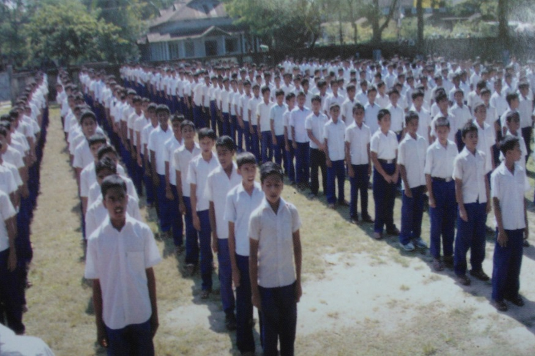

.jpg "banner")
Admission Info

Admission Procedure:
- Fill up the Application Form for Admission.
- Together with the completed form, enclose 3 passport-sized photographs, supporting documents such as a photocopy of identity card (ID) and certified true copies of academic results.
- With the application, enclose an application fee of Tk. 100 (Taka Bangladeshi One hundred only). Payment can be made by crossed cheque, postal order, bank draft or cashier's order.
- Students can download the Application Form from the bottom of this page.
- All students are strongly advised to take the Math , English and Science assessment to determine their ability to benefit in School level courses.
Click Here  To Download Admission Form
To Download Admission Form